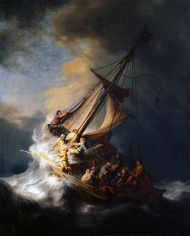
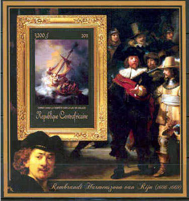
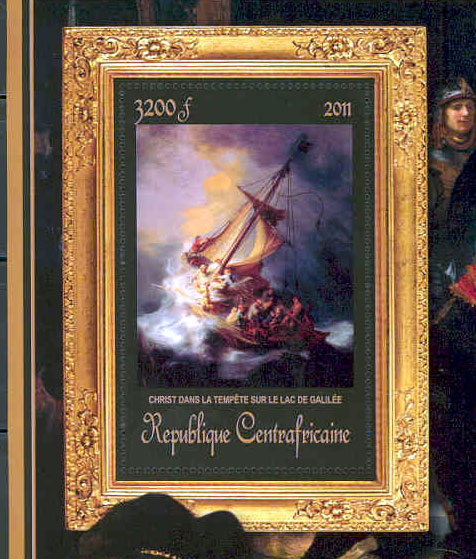

| Created 11/16/2012. Revised:
11/16/2012. Copyright © 2012 by Victor Manta, Switzerland. All rights reserved worldwide. |
|
THE LARGEST SINGLE PROPERTY THEFT IN RECORDED HISTORY
In the early morning hours of March 18, 1990 – as the city was preoccupied with Saint Patrick's Day celebrations – a pair of thieves disguised themselves as Boston police officers, gained entry to the Isabella Stewart Gardner Museum, and stole thirteen works of art.

The stolen artworks include The Concert by Vermeer (one of only 34 known works by Vermeer in the world), three works by Rembrandt including The Storm on the Sea of Galilee (the artist’s only known seascape) and a postage-stamp-sized Self-Portrait, five drawings by Degas, Chez Tortoni by Manet, a landscape painting formerly attributed to Rembrandt, and two objects, an ancient Chinese Ku and a finial in the shape of an eagle from a Napoleonic flag. Several empty frames hang in the Dutch Room gallery, both in homage to the missing works and as placeholders for when they are returned.

The stolen artworks have not yet been returned to the museum. However, the investigation remains an open, active case and leads are investigated by the museum and the FBI. Some media estimates have put the value of the stolen artworks at as much as $500 million, making the theft the largest single property theft in recorded history. An offer of a reward from the Gardner Museum of up to $5 million for information leading to the recovery of the stolen artwork remains open. Source.

We display above the Souvenir sheet issued by the Central African Republic in 2011, Michel Block 831: Rembrandt van Rijn, Christ in the Storm in the Sea of Galilee. It is one of the 107 souvenir sheets issued by this country in 2011 only, eventually a steal per se.
Link: Missed Paintings
| Created 11/16/2012. Revised:
11/16/2012. Copyright © 2012 by Victor Manta, Switzerland. All rights reserved worldwide. |
|